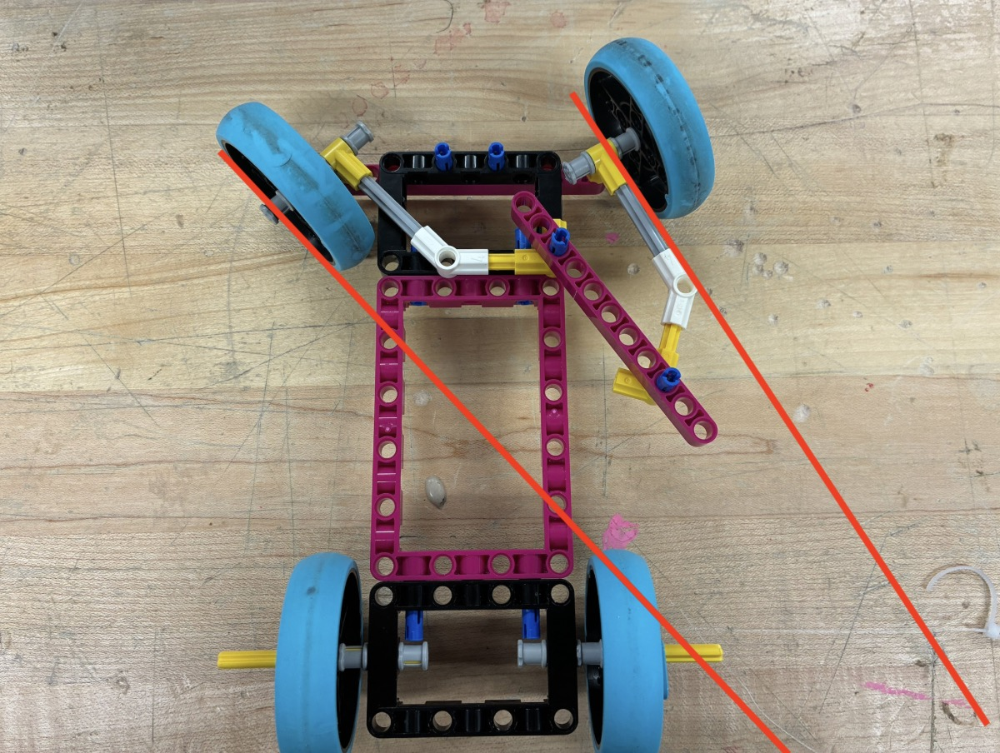

I made a car chassis with Ackerman steering attached to it. To summarize, Ackermann steering is the type of steering most commercial cars use where the inner tire turns at a greater angle than the outer angle when making a turn. (In the video I accidentally do an anti-ackermann, but that is also possible due to an additional degree of freedom from another linkage). It represents me because not only am I highly interested in mechanical systems, but also because I used to be a huge fan of hot wheels as a kid, and I believe I owned over 80 of those small mini cars. I am also a terrible driver if it adds any relevance to the personal connection.